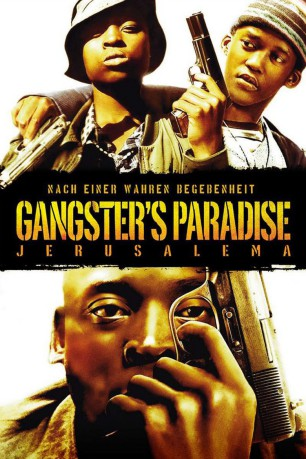

#4715 Gangster's Paradise - Jerusalema
Alternativ: Gangster's Paradise: Jerusalema (Englischer Titel)
 
 IMDB-Wertung: 7.7 / 10
IMDB-Wertung: 7.7 / 10  Metascore: 0
Metascore: 0 
Im Südafrika des späten 20. Jahrhunderts wandelt sich das Apartheidregime zur Demokratie, doch der junge Lucky Kunene kann sich trotzdem kein Studium leisten, obwohl er die passenden Noten dafür mit von der Schule brächte. Also verlegt er sich mit seinem Kumpel aufs Carjacking und stiehlt den weißen Pfeffersäcken die Daimlers unter dem Allerwertesten weg. Nach einem Umweg über ein Taxiunternehmen kommt er auf die Masche, ganze Häuser zu stehlen und gewinnbringend weiterzuvermieten. Doch Luckys Glück währt nicht ewig.
Jahr: 2008
Dauer: 118 Minuten
FSK:
Land: Süd-Afrika Studio: Ascot Elite Home EntertainmentTonspuren: DTS - ,
Untertitel: Deutsch,
Auflösung: 1080p (1920x816) Größe: 10240 MB
Genre: Action, Krimi, Drama
Regisseur: Ralph Ziman
Drehbuch: Hinako Sugiura
Soundtrack:
Darsteller:
- Robert Hobbs als Inspector Blakkie Swart
- Buyi Mazibuko als Older Nomsa
- Nicky Rebelo als Santos Ribeiro
- Eugene Khumbanyiwa als Drug dealer
- Rapulana Seiphemo als Lucky Kunene
- Jeffrey Zekele als Nazareth
- Ronnie Nyakale als Zakes Mbolelo
- Shelley Meskin als Leah Friedlander
- Malusi Skenjana als Tony Ngu
- Jafta Mamabolo als Young Kunene
- Motlatsi Mahloko als Young Zakes
- Kenneth Nkosi als Lucas Sithole
- Sally Burdett als News reader
- Lerato Moloi als Loretta Dlamini
- Thandy Matlaila als Young Nomsa
- Mzwandile Ngubeni als Young Bull
- Gladys Mahlangu als Mama Kunene
- Patrick Bakoba als Caiphas
- Jacob Foxen als Naidoo
- Nathaniel Ramabulana als Gun dealer
- Basil Appollis als Stolen car dealer
- Zakhele Stanley Mabasa als White Isuzu driver
- Mpho Molepo als Older Bull
- Prince Osuzhuknu als Ade Okeke
- Louise Saint-Claire als Anna-Marie van Rensburg
- Patrick Mofokeng als Vusi
- Daniel Buckland als Josh Friedlander
- Jacques Gombault als Du Toit, Building inspector
- Keith Joshua als Singh, Building inspector
- Anthony Fridjhon als Harry Friedlander
- Michele Maxwell als Anita Friedlander
- Sello Motloung als Detective Modisane
- Geoffrey Mbenge als Judge
- Sinki Langa als Rehab orderly
Datei: X:\2008(G-M)\Gangster's Paradise - Jerusalema (2008, FSK, 1920x816).mkv seit 08.11.2016
Festplatte: HD 2008(G-Z)-2009(A-F)
 Es gibt insgesamt 73 Filme in der Gruppe '2008(G-M)'
Es gibt insgesamt 73 Filme in der Gruppe '2008(G-M)'